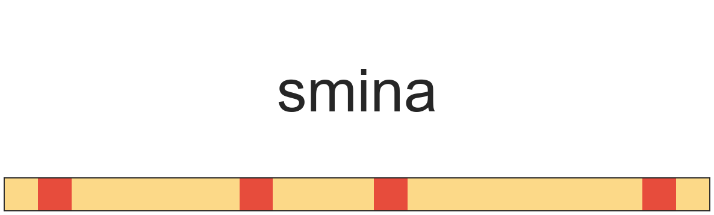
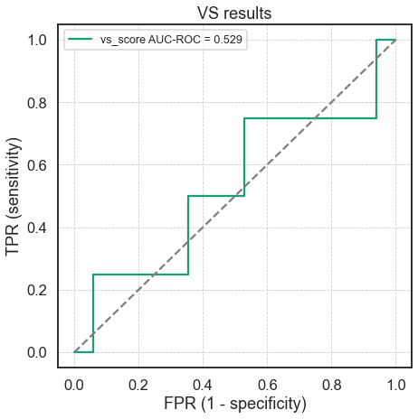
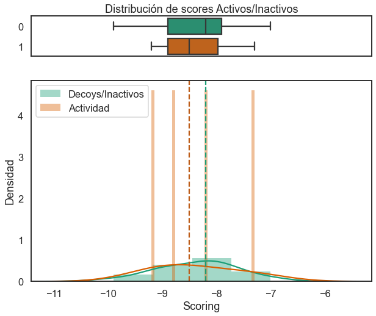

Cribado Virtual con Smina
Acoplamiento molecular con Smina
Obtención y preparación de las moléculas
- Crea tu directorio de trabajo:
- Descarga el archivo de la proteína y de las moléculas en formato SMILES ⬇️:
- Proteína: 1fin_PROT.pdb
- Archivo de ligandos (SMILES): cdk2_sample.smi
- Descarga los siguientes archivos y guardalos en tu directorio de trabajo ⬇️ (guárdalos para después):
📂 wd_vs
│ 🗒 1fin_PROT.pdb
│ 🗒 cdk2_sample.smi
│ 🗒 cdk2_activity_mols.csv
│ 🗒 plot_metrics.py
│ 🗒 analisis_resultados_vina.ipynbPreparación de los ligandos
- Extraer las moléculas del archivo cdk2_sample.smi en una nueva carpeta utilizando OpenBabel
- Recupera los nombres originales de las moléculas
Ejecuta el siguiente comando:
# Renombra cada archivo para conservar
# el nombre original
for i in *;
do name=`head -n 2 $i | tail -n 1`;
mv $i $name.mol2;
done- Usa
obabelpara convertir las moléculas apdbqt:
# Sal de la carpeta ligands al directorio padre
cd ..
# Crea un nuevo directorio para guardar los archivos `pdbqt`
mkdir ligs_pdbqt
# Ejecuta openbabel para **múltiples** inputs
obabel -imol2 ligands/* -opdbqt -O ligs_pdbqt/.pdbqt -m📂 wd_vs
| 📜 ...
│ 🗒 1fin_PROT.pdb
│ 🗒 cdk2_sample.smi
├── 📂 ligands
│ ├── *.mol2
├── 📂 ligs_pdbqt
│ ├── *.pdbqtPreparación del Receptor
- Tener el ambiente de conda
dockactivado y localizarse en la carpeta de trabajo (wd_dk). - Ejecutar PDB2PQR con alguno de los siguientes comandos (dependiendo de la versión con la que cuentes):
# Para la versión más reciente
pdb2pqr30 --ff='AMBER' --ffout='AMBER' \
--with-ph=7.0 --drop-water --keep-chain \
--pdb-output prot.pdb \
1fin_PROT.pdb pqr_file.pqr- Utiliza Castp para identificar el mejor candidato al sitio de unión.

- Utiliza UCSF Chimera para establecer el tamaño y posición del espacio de búsqueda (puedes utilizar AutodockTools si lo deseas).
- Abre el archivo prot.pdb con UCSF Chimera.
- Ve a Tools > Surface/Binding Analysis > Autodock Vina
- Utiliza el cursor para dibujar la caja en la posición que consideres adecuada.
🚨 Sobre el espaciado del grid en Vina/Smina 🚨
Toma en cuenta que, al contrario que con Autodock4, en Vina el espaciado por default es de 1 Å, y no de 0.375 Å. Si utilizas AutodockTools para obtener las dimensiones de la caja, debes tomar esto en cuenta.
- Anota las coordenadas del tamaño y posición del espacio de búsqueda.
# Centro
x = -16
y = 205
z = 117
# Dimensiones
x = 21
y = 22
z = 22- Convierte el archivo
pdbde la proteína apdbqt:
-xes un argumento que permite especificar parámetros específicos del formato de salida, en este caso depdbqt, usando el parámetro r.
🚨 Sobre las cargas parciales: 🚨
- ¿Qué tipo de cargas parciales estamos usando tanto para la proteína como para los ligandos?
-
¿Por qué no fue necesario utilizar el script
prepare_ligand4.py? - Revisa el apartado Ease of use del Manual de Autodock vina
Ejecución de Smina con un único ligando
- Observa qué parámetros son necesarios para la ejecución de
smina:
Input:
-r [ --receptor ] arg rigid part of the receptor (PDBQT)
--flex arg flexible side chains, if any (PDBQT)
-l [ --ligand ] arg ligand(s)
--flexres arg flexible side chains specified by comma
separated list of chain:resid
--flexdist_ligand arg Ligand to use for flexdist
--flexdist arg set all side chains within specified distance
to flexdist_ligand to flexible
Search space (required):
--center_x arg X coordinate of the center
--center_y arg Y coordinate of the center
--center_z arg Z coordinate of the center
--size_x arg size in the X dimension (Angstroms)
--size_y arg size in the Y dimension (Angstroms)
--size_z arg size in the Z dimension (Angstroms)
...
Output (optional):
-o [ --out ] arg output file name, format taken from file
extension
--out_flex arg output file for flexible receptor residues
--log arg optionally, write log file
...
- Realiza el primer acoplamiento con smina:
smina -r prot.pdbqt \
-l ligs_pdbqt/CS1.pdbqt \
-o CS1_docked.pdbqt \
--log CS1_docked.log \
--center_x -16 \
--center_y 205 \
--center_z 117 \
--size_x 21 \
--size_y 22 \
--size_z 22- Explora los resultados utilizando UCSF Chimera o AutodockTools.
📂 wd_vs
| 📜 ...
│ 🗒 1fin_PROT.pdb
│ 🗒 cdk2_sample.smi
├── 📂 ligands
│ ├── *.mol2
├── 📂 ligs_pdbqt
│ ├── *.pdbqt
│ 🗒 CS1_docked.pdbqt
│ 🗒 CS1_docked.logMúltiples acoplamientos utilizando smina
- Crea una carpeta para guardar los resultados:
- Con tu editor de texto, crea un archivo de configuración ⚙️ para definir los parámetros generales: docking_smina.conf.
# Nombre del archivo del receptor
receptor = prot.pdbqt
# Exhaustividad de búsqueda
exhaustiveness = 4
# Posición del centro del grid (en A)
center_x = -16
center_y = 205
center_z = 117
# Dimensiones del espacio de búsqueda (en A)
size_x = 21
size_y = 22
size_z = 22
# Número de cpus
cpu = 2
# Scoring a utilizar
scoring = vina- Ejecuta smina utilizando un ciclo
for:
for lig in ligs_pdbqt/*.pdbqt;
do name=`basename $lig .pdbqt`;
echo "Ejecutanto para $name";
smina --config docking_smina.conf --ligand $lig --log docks/$name.log --out docks/"$name"_dk.pdbqt;
done- Funciones de scoring disponibles:
ad4_scoring
default
dkoes_fast
dkoes_scoring
dkoes_scoring_old
vina
vinardo
📂 wd_vs
| 📜 ...
│ 🗒 1fin_PROT.pdb
│ 🗒 cdk2_sample.smi
│ 🗒 docking_smina.conf
├── 📂 ligands
│ ├── *.mol2
├── 📂 ligs_pdbqt
│ ├── *.pdbqt
├── 📂 docks
│ ├── *.pdbqt
│ ├── *.logVerifica los resultados:
- Inspecciona uno de los archivos
.log:
smina is based off AutoDock Vina. Please cite appropriately.
Weights Terms
-0.035579 gauss(o=0,_w=0.5,_c=8)
-0.005156 gauss(o=3,_w=2,_c=8)
0.840245 repulsion(o=0,_c=8)
-0.035069 hydrophobic(g=0.5,_b=1.5,_c=8)
-0.587439 non_dir_h_bond(g=-0.7,_b=0,_c=8)
1.923 num_tors_div
Using random seed: -1773553296
mode | affinity | dist from best mode
| (kcal/mol) | rmsd l.b.| rmsd u.b.
-----+------------+----------+----------
1 -7.3 0.000 0.000
2 -6.9 4.809 6.736
3 -6.8 3.713 6.878
4 -6.5 2.142 2.726
5 -6.3 4.802 7.096
6 -5.9 4.830 7.270
7 -5.9 4.721 6.108
8 -5.8 6.136 6.929
9 -5.8 5.366 6.335- De cada archivo
.lognos suele interesar sólo el valor de energía del primer modo de unión, es decir, del mejor acoplamiento.
- Busca y devuelve en el archivo
docks/CS1.logla primera ocurrencia (-m 1) del texto'1 '
1 -7.3 0.000 0.000- Añadimos el comando
tr -s ' ':
1 -7.3 0.000 0.000- Finalmente añadimos el comando
cutque delimitará la cadena de texto1 -7.3 0.000 0.000por espacios en blanco ('d ' ') y devolverá únicamente la columna 2 (-f2):
-7.3- Usamos nuevamente un clico para generar los resultados que nos interesan:
for dklog in docks/*log;
do echo "Procesando ligando $dklog";
result=`grep '1 ' -m 1 $dklog | tr -s ' ' | cut -d ' ' -f2`;
echo $result;
doneProcesando ligando docks/CS1.log
-7.3
Procesando ligando docks/CS100.log
-9.1
Procesando ligando docks/CS102.log
-9.9
Procesando ligando docks/CS154.log
...- Usa el mismo ciclo for para guardar los resultados en un único archivo llamado vs_results.csv:
- Creamos el archivo
csv:
- Ejecutamos nuevamente el ciclo:
for dklog in docks/*log;
do echo "Procesando ligando $dklog";
result=`grep '1 ' -m 1 $dklog | tr -s ' ' | cut -d ' ' -f2`;
# Agregamos estas líneas;
name=`basename $dklog .log`;
echo "$name, $result" >> vs_results.csv;
echo $result;
done- Cuida no ejecutar el ciclo múltiples veces para evitar duplicar resultados.
- Visualiza el resultado:
ligando,score
CS1, -7.3
CS100, -9.1
CS102, -9.9
CS154, -8.8
CS16, -8.2
CS160, -8.3
CS261, -8.8
CS262, -9.2
CS47, -7.9Análisis de los resultados con jupyter

- Activa el ambiente
jupcon conda. - Asegurate de haber descargado y guardado en tu carpeta de trabajo los archivos:
- cdk2_activity_mols.csv
- plot_metrics.py
- analisis_resultados_vina.ipynb
- Inicia el servidor de jupyter:
- Se abrirá el explorador de internet y tendrás acceso a la interfaz de jupyter.
- Abre el archivo
analisis_resultados_vina.ipynb - En la celda de ejecución número 2, asegurate que el nombre del archivo de resultados
.csvsea el correcto:
- Ejecuta el notebook mediante Cell > Run All
Resultados del notebook
Ranking de moléculas:
# Ejecutar dentro del notebook
vs_res = PlotMetric(y_true = df.actividad,
y_pred_dict = {'smina': df.score})
vs_res.plot_actives_distribution(add_to_title='')
Curva ROC y Área bajo la curva ROC
# Ejecutar dentro del notebook
vs_res.plot_roc_auc(title='VS results',
fontsize='x-small',
show_by_itself = False)
Distribución de los scores entre Activos e Inactivos
Normalidad Activos (ShapiroWilks)
'> W = 0.96 , p-value=0.81'
Normalidad Inactivos (ShapiroWilks)
'> W = 0.98 , p-value=0.9818'
Prueba de Bartlett para Homocedasticidad
'> W = 0.08 , p-value=0.7758'
t-student para pruebas independientes
'> t = -0.04 , p-value=0.9691'
Mann-Whitney (no paramétrica)
'> W = 32.0 , p-value=0.4464'
Recursos
- Sobre curvas ROC: